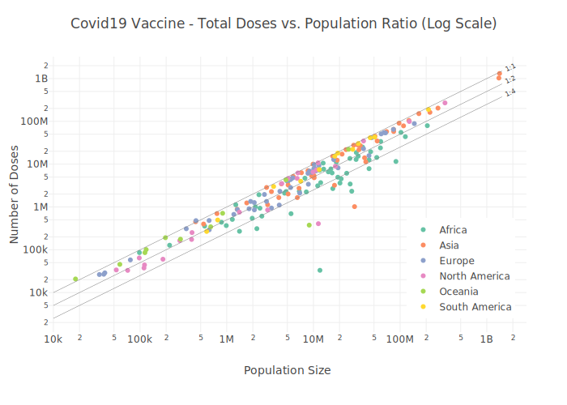

The coronavirus package provides a tidy format dataset of the 2019 Novel Coronavirus COVID-19 (2019-nCoV) epidemic and the vaccination efforts by country. The raw data is being pulled from the Johns Hopkins University Center for Systems Science and Engineering (JHU CCSE) Coronavirus repository.
More details available here, and a csv format of the package dataset available here

Important Notes
- As this an ongoing situation, frequent changes in the data format may occur, please visit the package changelog (e.g., News) and/or see pinned issues to get updates about those changes
- As of Auguest 4th JHU CCSE stopped track recovery cases, please see this issue for more details
- Negative values and/or anomalies may occurred in the data for the following reasons:
- The calculation of the daily cases from the raw data which is in cumulative format is done by taking the daily difference. In some cases, some retro updates not tie to the day that they actually occurred such as removing false positive cases
- Anomalies or error in the raw data
- Please see this issue for more details
Installation
Install the CRAN version:
install.packages("coronavirus")Install the Github version (refreshed on a daily bases):
# install.packages("devtools")
devtools::install_github("RamiKrispin/coronavirus")Datasets
The package provides the following two datasets:
-
coronavirus - tidy (long) format of the JHU CCSE datasets. That includes the following columns:
-
date- The date of the observation, usingDateclass -
province- Name of province/state, for countries where data is provided split across multiple provinces/states -
country- Name of country/region -
lat- The latitude code -
long- The longitude code -
type- An indicator for the type of cases (confirmed, death, recovered) -
cases- Number of cases on given date -
uid- Country code -
province_state- Province or state if applicable -
iso2- Officially assigned country code identifiers with two-letter -
iso3- Officially assigned country code identifiers with three-letter -
code3- UN country code -
fips- Federal Information Processing Standards code that uniquely identifies counties within the USA -
combined_key- Country and province (if applicable) -
population- Country or province population -
continent_name- Continent name -
continent_code- Continent code
-
-
covid19_vaccine - a tidy (long) format of the the Johns Hopkins Centers for Civic Impact global vaccination dataset by country. This dataset includes the following columns:
-
country_region- Country or region name -
date- Data collection date in YYYY-MM-DD format -
doses_admin- Cumulative number of doses administered. When a vaccine requires multiple doses, each one is counted independently -
people_partially_vaccinated- Cumulative number of people who received at least one vaccine dose. When the person receives a prescribed second dose, it is not counted twice -
people_fully_vaccinated- Cumulative number of people who received all prescribed doses necessary to be considered fully vaccinated -
report_date_string- Data report date in YYYY-MM-DD format -
uid- Country code -
province_state- Province or state if applicable -
iso2- Officially assigned country code identifiers with two-letter -
iso3- Officially assigned country code identifiers with three-letter -
code3- UN country code -
fips- Federal Information Processing Standards code that uniquely identifies counties within the USA -
lat- Latitude -
long- Longitude -
combined_key- Country and province (if applicable) -
population- Country or province population -
continent_name- Continent name -
continent_code- Continent code
-
Data refresh
While the coronavirus CRAN version is updated every month or two, the Github (Dev) version is updated on a daily bases. The update_dataset function enables to overcome this gap and keep the installed version with the most recent data available on the Github version:
Note: must restart the R session to have the updates available
Alternatively, you can pull the data using the Covid19R project data standard format with the refresh_coronavirus_jhu function:
covid19_df <- refresh_coronavirus_jhu()
#> [4;32mLoading 2020 data[0m
#> [4;32mLoading 2021 data[0m
#> [4;32mLoading 2022 data[0m
#> [4;32mLoading 2023 data[0m
head(covid19_df)
#> date location location_type location_code location_code_type
#> 1 2021-08-05 Afghanistan country AF iso_3166_2
#> 2 2021-01-01 Afghanistan country AF iso_3166_2
#> 3 2022-06-22 Afghanistan country AF iso_3166_2
#> 4 2022-06-25 Afghanistan country AF iso_3166_2
#> 5 2021-01-05 Afghanistan country AF iso_3166_2
#> 6 2021-01-03 Afghanistan country AF iso_3166_2
#> data_type value lat long
#> 1 deaths_new 28 33.93911 67.70995
#> 2 cases_new 183 33.93911 67.70995
#> 3 cases_new 104 33.93911 67.70995
#> 4 cases_new 39 33.93911 67.70995
#> 5 cases_new 102 33.93911 67.70995
#> 6 cases_new 123 33.93911 67.70995Usage
data("coronavirus")
head(coronavirus)
#> date province country lat long type cases uid iso2 iso3
#> 1 2020-01-22 Alberta Canada 53.9333 -116.5765 confirmed 0 12401 CA CAN
#> 2 2020-01-23 Alberta Canada 53.9333 -116.5765 confirmed 0 12401 CA CAN
#> 3 2020-01-24 Alberta Canada 53.9333 -116.5765 confirmed 0 12401 CA CAN
#> 4 2020-01-25 Alberta Canada 53.9333 -116.5765 confirmed 0 12401 CA CAN
#> 5 2020-01-26 Alberta Canada 53.9333 -116.5765 confirmed 0 12401 CA CAN
#> 6 2020-01-27 Alberta Canada 53.9333 -116.5765 confirmed 0 12401 CA CAN
#> code3 combined_key population continent_name continent_code
#> 1 124 Alberta, Canada 4413146 North America NA
#> 2 124 Alberta, Canada 4413146 North America NA
#> 3 124 Alberta, Canada 4413146 North America NA
#> 4 124 Alberta, Canada 4413146 North America NA
#> 5 124 Alberta, Canada 4413146 North America NA
#> 6 124 Alberta, Canada 4413146 North America NASummary of the total confrimed cases by country (top 20):
library(dplyr)
summary_df <- coronavirus %>%
filter(type == "confirmed") %>%
group_by(country) %>%
summarise(total_cases = sum(cases)) %>%
arrange(-total_cases)
summary_df %>% head(20)
#> # A tibble: 20 × 2
#> country total_cases
#> <chr> <dbl>
#> 1 US 101648826
#> 2 India 44682378
#> 3 France 39646833
#> 4 Germany 37605135
#> 5 Brazil 36628099
#> 6 Japan 31438775
#> 7 Korea, South 29821035
#> 8 Italy 25363742
#> 9 United Kingdom 24475895
#> 10 Russia 21548111
#> 11 Turkey 17042722
#> 12 Spain 13711251
#> 13 Vietnam 11526140
#> 14 Australia 11247412
#> 15 Argentina 10004679
#> 16 Taiwan* 9209474
#> 17 Netherlands 8690420
#> 18 Iran 7562610
#> 19 Mexico 7314891
#> 20 Indonesia 6726086Summary of new cases during the past 24 hours by country and type (as of 2023-01-15):
library(tidyr)
coronavirus %>%
filter(date == max(date)) %>%
select(country, type, cases) %>%
group_by(country, type) %>%
summarise(total_cases = sum(cases)) %>%
pivot_wider(names_from = type,
values_from = total_cases) %>%
arrange(-confirmed)
#> # A tibble: 201 × 4
#> # Groups: country [201]
#> country confirmed death recovery
#> <chr> <dbl> <dbl> <dbl>
#> 1 Japan 108281 415 0
#> 2 Taiwan* 21267 31 0
#> 3 New Zealand 19181 44 0
#> 4 Korea, South 14144 35 0
#> 5 China 6261 66 0
#> 6 Mexico 5737 85 0
#> 7 Russia 4736 41 0
#> 8 Brazil 3537 2 0
#> 9 US 2718 0 0
#> 10 Chile 2577 13 0
#> # … with 191 more rowsPlotting daily confirmed and death cases in Brazil:
library(plotly)
coronavirus %>%
group_by(type, date) %>%
summarise(total_cases = sum(cases)) %>%
pivot_wider(names_from = type, values_from = total_cases) %>%
arrange(date) %>%
mutate(active = confirmed - death - recovery) %>%
mutate(active_total = cumsum(active),
recovered_total = cumsum(recovery),
death_total = cumsum(death)) %>%
plot_ly(x = ~ date,
y = ~ active_total,
name = 'Active',
fillcolor = '#1f77b4',
type = 'scatter',
mode = 'none',
stackgroup = 'one') %>%
add_trace(y = ~ death_total,
name = "Death",
fillcolor = '#E41317') %>%
add_trace(y = ~recovered_total,
name = 'Recovered',
fillcolor = 'forestgreen') %>%
layout(title = "Distribution of Covid19 Cases Worldwide",
legend = list(x = 0.1, y = 0.9),
yaxis = list(title = "Number of Cases"),
xaxis = list(title = "Source: Johns Hopkins University Center for Systems Science and Engineering"))
Plot the confirmed cases distribution by counrty with treemap plot:
conf_df <- coronavirus %>%
filter(type == "confirmed") %>%
group_by(country) %>%
summarise(total_cases = sum(cases)) %>%
arrange(-total_cases) %>%
mutate(parents = "Confirmed") %>%
ungroup()
plot_ly(data = conf_df,
type= "treemap",
values = ~total_cases,
labels= ~ country,
parents= ~parents,
domain = list(column=0),
name = "Confirmed",
textinfo="label+value+percent parent")
data(covid19_vaccine)
head(covid19_vaccine)
#> date country_region continent_name continent_code combined_key
#> 1 2020-12-29 Austria Europe EU Austria
#> 2 2020-12-29 Bahrain Asia AS Bahrain
#> 3 2020-12-29 Belarus Europe EU Belarus
#> 4 2020-12-29 Belgium Europe EU Belgium
#> 5 2020-12-29 Canada North America NA Canada
#> 6 2020-12-29 Chile South America SA Chile
#> doses_admin people_at_least_one_dose population uid iso2 iso3 code3 fips
#> 1 2123 2123 9006400 40 AT AUT 40 <NA>
#> 2 55014 55014 1701583 48 BH BHR 48 <NA>
#> 3 0 0 9449321 112 BY BLR 112 <NA>
#> 4 340 340 11589616 56 BE BEL 56 <NA>
#> 5 59079 59078 37855702 124 CA CAN 124 <NA>
#> 6 0 0 19116209 152 CL CHL 152 <NA>
#> lat long
#> 1 47.5162 14.550100
#> 2 26.0275 50.550000
#> 3 53.7098 27.953400
#> 4 50.8333 4.469936
#> 5 60.0000 -95.000000
#> 6 -35.6751 -71.543000Taking a snapshot of the data from the most recent date available and calculate the ratio between total doses admin and the population size:
df_summary <- covid19_vaccine |>
filter(date == max(date)) |>
select(date, country_region, doses_admin, total = people_at_least_one_dose, population, continent_name) |>
mutate(doses_pop_ratio = doses_admin / population,
total_pop_ratio = total / population) |>
filter(country_region != "World",
!is.na(population),
!is.na(total)) |>
arrange(- total)
head(df_summary, 10)
#> date country_region doses_admin total population continent_name
#> 1 2023-01-15 China NA 1307511577 1404676330 Asia
#> 2 2023-01-15 India NA 1027248959 1380004385 Asia
#> 3 2023-01-15 US 666511603 268556888 329466283 North America
#> 4 2023-01-15 Indonesia 447461191 204045153 273523621 Asia
#> 5 2023-01-15 Brazil 498527141 188821957 212559409 South America
#> 6 2023-01-15 Pakistan 317696373 154665740 220892331 Asia
#> 7 2023-01-15 Bangladesh 344352422 150472186 164689383 Asia
#> 8 2023-01-15 Japan 374896390 104590913 126476458 Asia
#> 9 2023-01-15 Mexico 225063079 99071001 127792286 North America
#> 10 2023-01-15 Vietnam 265336568 90427458 97338583 Asia
#> doses_pop_ratio total_pop_ratio
#> 1 NA 0.9308277
#> 2 NA 0.7443809
#> 3 2.023004 0.8151271
#> 4 1.635914 0.7459873
#> 5 2.345354 0.8883256
#> 6 1.438241 0.7001861
#> 7 2.090921 0.9136727
#> 8 2.964159 0.8269595
#> 9 1.761163 0.7752502
#> 10 2.725914 0.9289991Plot of the total doses and population ratio by country:
# Setting the diagonal lines range
line_start <- 10000
line_end <- 1500 * 10 ^ 6
# Filter the data
d <- df_summary |>
filter(country_region != "World",
!is.na(population),
!is.na(total))
# Replot it
p3 <- plot_ly() |>
add_markers(x = d$population,
y = d$total,
text = ~ paste("Country: ", d$country_region, "<br>",
"Population: ", d$population, "<br>",
"Total Doses: ", d$total, "<br>",
"Ratio: ", round(d$total_pop_ratio, 2),
sep = ""),
color = d$continent_name,
type = "scatter",
mode = "markers") |>
add_lines(x = c(line_start, line_end),
y = c(line_start, line_end),
showlegend = FALSE,
line = list(color = "gray", width = 0.5)) |>
add_lines(x = c(line_start, line_end),
y = c(0.5 * line_start, 0.5 * line_end),
showlegend = FALSE,
line = list(color = "gray", width = 0.5)) |>
add_lines(x = c(line_start, line_end),
y = c(0.25 * line_start, 0.25 * line_end),
showlegend = FALSE,
line = list(color = "gray", width = 0.5)) |>
add_annotations(text = "1:1",
x = log10(line_end * 1.25),
y = log10(line_end * 1.25),
showarrow = FALSE,
textangle = -25,
font = list(size = 8),
xref = "x",
yref = "y") |>
add_annotations(text = "1:2",
x = log10(line_end * 1.25),
y = log10(0.5 * line_end * 1.25),
showarrow = FALSE,
textangle = -25,
font = list(size = 8),
xref = "x",
yref = "y") |>
add_annotations(text = "1:4",
x = log10(line_end * 1.25),
y = log10(0.25 * line_end * 1.25),
showarrow = FALSE,
textangle = -25,
font = list(size = 8),
xref = "x",
yref = "y") |>
add_annotations(text = "Source: Johns Hopkins University - Centers for Civic Impact",
showarrow = FALSE,
xref = "paper",
yref = "paper",
x = -0.05, y = - 0.33) |>
layout(title = "Covid19 Vaccine - Total Doses vs. Population Ratio (Log Scale)",
margin = list(l = 50, r = 50, b = 90, t = 70),
yaxis = list(title = "Number of Doses",
type = "log"),
xaxis = list(title = "Population Size",
type = "log"),
legend = list(x = 0.75, y = 0.05))
Dashboard
Note: Currently, the dashboard is under maintenance due to recent changes in the data structure. Please see this issue
A supporting dashboard is available here

Data Sources
The raw data pulled and arranged by the Johns Hopkins University Center for Systems Science and Engineering (JHU CCSE) from the following resources:
- World Health Organization (WHO): https://www.who.int/
- DXY.cn. Pneumonia. 2020. https://ncov.dxy.cn/ncovh5/view/pneumonia.
- BNO News: https://bnonews.com/index.php/2020/04/the-latest-coronavirus-cases/
- National Health Commission of the People’s Republic of China (NHC):
http:://www.nhc.gov.cn/xcs/yqtb/list_gzbd.shtml
- China CDC (CCDC): http:://weekly.chinacdc.cn/news/TrackingtheEpidemic.htm
- Hong Kong Department of Health: https://www.chp.gov.hk/en/features/102465.html
- Macau Government: https://www.ssm.gov.mo/portal/
- Taiwan CDC: https://sites.google.com/cdc.gov.tw/2019ncov/taiwan?authuser=0
- US CDC: https://www.cdc.gov/coronavirus/2019-ncov/index.html
- Government of Canada: https://www.canada.ca/en/public-health/services/diseases/2019-novel-coronavirus-infection/symptoms.html
- Australia Government Department of Health:https://www.health.gov.au/health-alerts/covid-19
- European Centre for Disease Prevention and Control (ECDC): https://www.ecdc.europa.eu/en/geographical-distribution-2019-ncov-cases
- Ministry of Health Singapore (MOH): https://www.moh.gov.sg/covid-19
- Italy Ministry of Health: https://www.salute.gov.it/nuovocoronavirus
- 1Point3Arces: https://coronavirus.1point3acres.com/en
- WorldoMeters: https://www.worldometers.info/coronavirus/
- COVID Tracking Project: https://covidtracking.com/data. (US Testing and Hospitalization Data. We use the maximum reported value from “Currently” and “Cumulative” Hospitalized for our hospitalization number reported for each state.)
- French Government: https://dashboard.covid19.data.gouv.fr/
- COVID Live (Australia): https://covidlive.com.au/
- Washington State Department of Health:https://doh.wa.gov/emergencies/covid-19
- Maryland Department of Health: https://coronavirus.maryland.gov/
- New York State Department of Health: https://health.data.ny.gov/Health/New-York-State-Statewide-COVID-19-Testing/xdss-u53e/data
- NYC Department of Health and Mental Hygiene: https://www1.nyc.gov/site/doh/covid/covid-19-data.page and https://github.com/nychealth/coronavirus-data
- Florida Department of Health Dashboard: https://services1.arcgis.com/CY1LXxl9zlJeBuRZ/arcgis/rest/services/Florida_COVID19_Cases/FeatureServer/0 and https://fdoh.maps.arcgis.com/apps/opsdashboard/index.html#/8d0de33f260d444c852a615dc7837c86
- Palestine (West Bank and Gaza): https://corona.ps/details
- Israel: https://govextra.gov.il/ministry-of-health/corona/corona-virus/
- Colorado: https://covid19.colorado.gov/data)